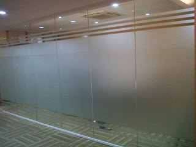
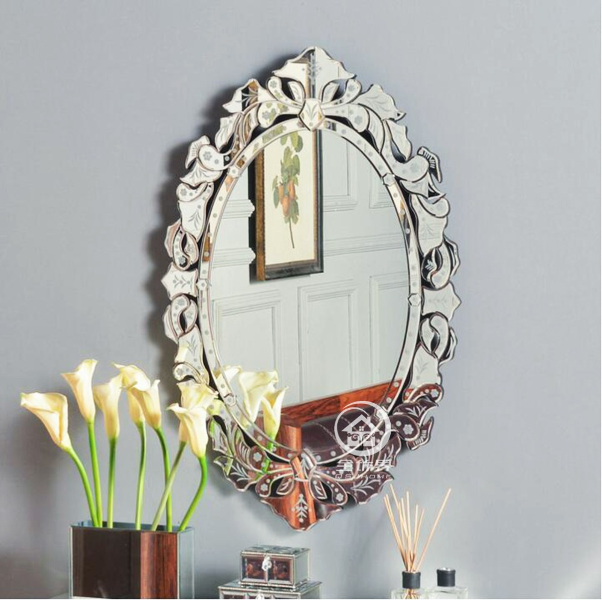

Kaca ialah keperluan yang krusial bagi sebuah industry maupun gedung. Namun sekarang, pemakaian kaca semakin meluas.
Tak kaca tempered, kaca shower, kanopi kaca, parket kayu jati dan masih banyak lagi. Berikut ini sedikit review mengenai kaca bagi sebuah banguanan, fungsi utama dan bagaiman memilih kaca yang cocok untuk sebuah hunian baik rumah, kantor ataupun gedung. Akan di jelaskan juga mengenai lantai kayu jati terbaik yang dapat anda beli.
Distributor & Supplier Partisi Kaca di Pasuruan

Partisi kaca menjadi alternatif yang bagi Anda yang berkeinginan menghemat tarif bangunan. Tarif ini tentu bukan tanpa alasan. Yang pertama, pembuatan dan pemasangan partisi kaca Pasuruan jauh lebih murah dibandingi dengan partisi yang terbuat dari batu bata. Banyak ruangan yang disekat dengan menggunakan partisi kaca Pasuruan. Alasan yang kedua, partisi kaca Pasuruan ini membuat ruangan nampak sangat minimalis. Ini layak dengan konsep atau desain properti ini. sekali partisi ini lebih hemat ketimbang pembatas berupa tembok yang terbuat dari batu bata, pasir, dan juga semen. Anda partisi kaca Pasuruan yang anda inginkan di dis.or.id. Akan tetapi, Anda seharusnya selektif dalam hal memilih kaca untuk partisi. , Anda sepatutnya perhatikan kwalitas kaca yang . Selain itu, teladan partisi kaca Pasuruan ada yang frameless (tanpa ) dan juga ada yang memakai bingkai.
Info Pemesanan Selengkapnaya
Google Maps: https://www.google.com/maps/d/viewer?mid=1R8kzChlMY2QK17rdE2QwzgHqdyqkVgbb&ll=-7.27380280025364%2C112.65243155000007&z=18
Note: https://www.facebook.com/notes/distributor-of-industrial-supply/pabrik-supplier-partisi-kaca-kamar-mandi-kantor-r-tamu-dlsb/1785723915060821/
Event: https://www.facebook.com/events/538733799826380/
Distributor & Supplier Kaca Shower
Anda pastinya meninginkan desain kamar mandi rumah layaknya kamar mandi hotel berbintang yang menerapkan kamar kecil duduk serta dilengkapi shower ataupun bath tub. Kecuali tersebut sekarang bisa anda lakukan dengna memakai kaca shower untuk kamar mandi anda. Tidak mau lebih sempurna lagi, kamar mandi yang mengaplikasikan shower ini bisa dilengkapi dengan bagian lain yaitu shower screen atau bisa disebut dengan kaca shower. Tak hanya indah melainkan kaca shower dapat menjadi kaca pembatas antara lantai kering dan basah pada kamar mandi. Tentunya banyak kelebihan yang dapat di temukan dari pemakaian kaca shower pada kamar mandi di rumah anda. Kecuali ini akan berdampak terhadap biaya yang akan dikeluarkan untuk membayar tukang. Apalagi sekarang telah ada warung penjual shower screen yang memasarkan produknya dalam cara satu paket termasuk pemasangannnya. Kita tidak perlu repot lagi mencari tukang sendiri karena pemasangan alat sekat ini memang membutuhkan teknik tersendiri.
Dis.or.id menyediakan kaca shower dengan kualitas premium sehingga saat dipasang akan segera nampak mewah. Disana anda dapat mendapatkan kaca shower yang berkualitas dan harga yang juga relatif murah. Tidak terbaik dan harga relatif murah.
Distributor, Supplier & Jasa Pasang Kanopi Kaca
Banyak jenis kaca kanopi yang diterapkan sebagai atap, tidak cuma satu jenis saja. Atap kaca skylight banyak diaplikasikan pada rumah, gedung, kantor, café yang mengusung gaya modern untuk membikin efek cahaya yang dramatis pada ruangan komponen bawahnya serta memberi kesan modern pada bangunan. Canopy kaca dengan atap kaca memang sebuah bangunan yang asangat elgan untuk jaman modern seperti sekarang ini dengan harga yang sangat lumayan sekiranya di bandingkan kanopi atap umum. Disinilah letak perbedaan optis yang utama antara akrilik (acrylic) dengan kaca. Seandainya tembus pandang, kaca meresap sinar yang masuk sehingga semakin tebal kaca maka semakin sedikit cahaya yang dapat melewatinya, maka sifat transparannya makin berkurang.|Di samping pintu kaca shower akan membuat kamar mandi kecil nampak lebih besar. Atap akrilik atau dapat juga disebut atap kaca acrylic ini banyak ditemukan di sebuah bangunan rumah, seperti ruko, apartemen, kafe, mall, sampai bangunan gedung.
Dis.or.id dapat membantu anda yang ingin memasang atap kaca skylight pada gedung, dengan pelbagai kelebihan yang dapat anda dapatkan dengan memanfaatkan jasa yang di tawarkan dis.or.id. Sekiranya itu, kanopi juga dapat melindungi kendaraan beroda empat dan kendaraan lain anda. Sesudah kaca untuk atap kanopi cukup digemari.
Jasa Maintenance Kaca

Jasa maintenance kaca telah menjadi alternatif ideal jika Anda ingin mengerjakan perawatan gedung yang terbuat dari kaca. Dengan kian berjalan nya waktu tentu gedung yang memiliki bahan kaca pada sisinya memerlukan perawatn khusus supaya konsisten awet dan tahan lama. Jasa maimtenence kaca menyediakan layanan pembersihan kaca gedung serta pembetulan kaca gedung yang rusak, pecah dan tidak cocok lagi untuk di pakai. Salah satunya pelayanan berupa pembersihan gedung yang terbuat dari kaca. Kaca menjadi kusam. Perlengkapan variasi kotoran seperti debu serta cahaya sang surya dan juga hujan acap kali membuat kaca gedung menjadi kusan dan tidak menarik. Jika itu, mampu membersihkan bangunan kaca melengkung.
Dis.or.id memahami semakin banyak gedung pencakar langit dengan betuk yang berbeda-beda. Dengan energi spesialis yang siap untuk menjalankan pembersihan dan bahan pembersih yang di miliki, kaca gedung perkantoran Anda akan tampak seperti baru lagi.
Jasa Pemasangan Kaca Tempered

Tak anda mebutuhkan jasa maintenance kaca, anda dapat mengunjungi dis.or.id. Selain ini disebabkan bahan ini bukan macam kaca lazim. Masyarakat telah mengerti keunggulan dari kaca ini. Kecuali sembarang tukang juga bisa melakukan pengerjaan pemotongan ini. Kini, semakin banyak properti yang mengaplikasikan kaca tempered. Namun dahulu hanya gedung perkantoran atau pusat perbelanjaan modern saja yang menerapkan ragam kaca ini, kini rumah hunian juga telah dibangun dengan kaca tempered.
Kalau itu, bermacam bagian properti akan kian menarik kalau dijadikan dari kaca tempered seperti kanopi, pintu, kamar mandi, dan balkon.
Salah satu variasi kaca yang pantas untuk diterapkan pada seluruh tipe bangunan maupun perindustrian yaitu kaca tempered, ialah yang paling aman karena memiliki elastisitas lebih bagus diperbandingkan dengan kaca umumnya. Kini dari kaca tempered dapat mengurangi bahaya cedera dikala kaca pecah sebab saat terjadi sesuatu seperti kaca pecah karenanya kaca tempered akan terurai menjadi butiran kecil yang relatif lebih aman dari potongan pecahan kaca lazim. Bukan sembarang alat yang digunakan untuk memotong kaca tempered sesuai dengan kebutuhan. Jikalau aman kaca tempered juga mampu memberikan kesan estetika yang amat bagus dibandingkan dengan kata variasi lainnya.
Distributor & Supplier Pintu Kaca
Sekarang telah tersedia bermacam-macam variasi dan berjenis-jenis contoh pintu kaca yang sedang menjadi popularitas ketika ini. Kian banyak model pintu kaca dikala ini seperti kaca tanpa frame atau frameless yang banyak dipakai untuk pintu perkantoran dan sentra perbelanjaan. Tersedia juga alumunium dan kayu seandainya Anda ingin memiliki pintu kaca dengan frame. Mengenai modelnya, Anda bisa putuskan apakah berharap mempunyai pintu kaca desain lipat, geser, atau teladan yang lain. Desain tersebut dapat disesuaikan dengan konsep properti Anda. Anda tinggal tentukan saja model pintu kaca seperti apa yang ingin Anda miliki. Dalam hal ini, terdapat beberapa ragam kaca dengan kwalitas yang terbaik. Sekarang paling banyak diminati ketika ini merupakan kaca tempered sebab jauh lebih kuat dan bendung lama.
Anda dapat memiliki pintu kaca unggulan anda kini juga dengan mengunjungi dis.or.id. Dengan energi spesialis yang telah sungguh-sungguh handal dalam membuat pelbagai model pintu kaca.
Terdapat juga opsi lain berapa kaca non-tempered yang harganya relatif lebih murah.
Jual Kaca Cermin

Kaca cermin kini mempunyai desain yang berbeda. Kini, cermin tak hanya berbentuk persegi saja. Untuk bangunan bertingakat, secara khusus diterapkan pada macam dinding kaca. Salah satunya, kaca cermin ini bersifat refletif. Jadi, cuma nampak transparan dari satu sisi saja. Untuk membikin ruangan private, karenanya kaca ini transparan kalau dipandang dari dalam. Seandainya itu, kadang kala cerminnya tak ada framenya atau yang acap kali disebut dengan kaca cermin frameless.
Apabila sebagai bahan untuk pintu kaca, kaca cermin ini juga masih diterapkan sebagai aksesoris cermin. Artinya, cermin tersebut tidak mempunyai frame atau pigura. Ada yang terbuat dari plastik, kayu, dan aluminum. Tidak figur lemari pakaian di mana komponen pintunya terbuat dari kaca cermin. Tersedia kaca cermin dengan bermacam ukuran yang dapat anda pesan di dis.or.id. Tetapi kunjungi dan temukan informasi menarik mengenai kaca cermin impian anda.
Jasa Pemasangan Railing Kaca
Sekarang railing kaca kini kian populer. Mungkin hal ini disebabkan kian banyak pemilik rumah yang ingin menunjukkan sebuah desain interior rumah yang benar-benar minimalis. Pastikan bagian hal yang demikian terbuat dari bahan aluminum yang kuat. Melainkan, selain desain, Anda juga perlu memandang bahan yang diterapkan. Sebaiknya gunakan kaca tempered sebab macam kaca ini betul-betul kuat. Bahkan juga bahan yang dipakai.
Tak ini tidak hanya diatur oleh ketebalan atau harga melainkan juga oleh jenis. Ini yakni ragam kaca yang betul-betul bagus dan kuat. Kaca ini sungguh-sungguh kuat dan juga aman. Dikatakan amat aman lantaran kaca tempered tidak memunculkan pecahan yang runcing saat tiba-tiba kaca pecah entah itu dampak kecelakaan atau bencana seperti gempa. Tidak anda saat ini sedang membutuhkan railing kaca untuk kantor, rumah dan tempat-tempat lainnya, anda dapat mengunjungi dis.or.id. Sekarang pasti, railing kaca ini menjadi alternatif yang tepat. Pastikan juga aluminum ini amat baik dan kuat.
Railing kaca dengan kwalitas terbaik dapat anda dapatkan di dis.or.id. Tentu dengan harga yang murah tetapi tetap berkelas.
Distributor & Supplier Pintu Lipat Kaca
Kaca tempered juga dapat dipakai untuk pintu lipat kaca. Jadi, bahan ini tak hanya untuk pintu saja. Pintu lipat kaca diaplikasikan dikala ruangan digunakan untuk hal yang privacy. Anda bisa mencari contoh pintu lipat kaca tempered minimalis lainnya. Apalagi jika taman Anda terbuka sehingga pencahayaan natural masuk. Karenanya, cahaya itupun akan masuk ke dalam ruang makan karena penyekatnya terbuat dari pintu kaca transparan.
Ukuran kaca menjadi faktor penentu berapa harga pintu kaca lipat yang Anda inginkan. Banyak pertimbangan yang membikin Anda pasti yakin untuk memilih kaca tempered daripada ragam kaca yang lainnya. Hinges yakni aksesoris vital, karena aksesoris inilah yang berperan untuk menyangga berat pintu kaca lipat.
Jasa Pemasangan Kubikel Toilet

Sekiranya anda mengininkan toilet yang layaknya mall maupun hotel, ada bagusnya anda mengaplikasikan kubikel WC. Banyak profit yang dapat didapat dengan menerapkan kubikel toilet seperti bisa membikin WC tampak lebih bersih dan juga cuma memerlukan sedikit space.
Kaca kini banyak diterapkan sebagai penyekat ruang. Salah satunya di kamar mandi. Bila anda sedang memerlukan kubikel kamar kecil, anda dapat lantas mengunjungi situs dis.or.id. Kecil kubikel juga memberikan hal yang efisien dan efektif dalam pembagian space kamar mandi yang kecil.
Keuntungan dari sekat kaca memberikan adalah bisa memberikan efek luas sebab ruangan tersekat namun secara visual tidak.
Melainkan pemakaian kaca di kamar mandi dapat jadi persoalan saat Anda meletakkannya dengan salah. Justru embun dapat menempel di kaca dan lambat laun dapat membuat kaca tak sejernih semula.